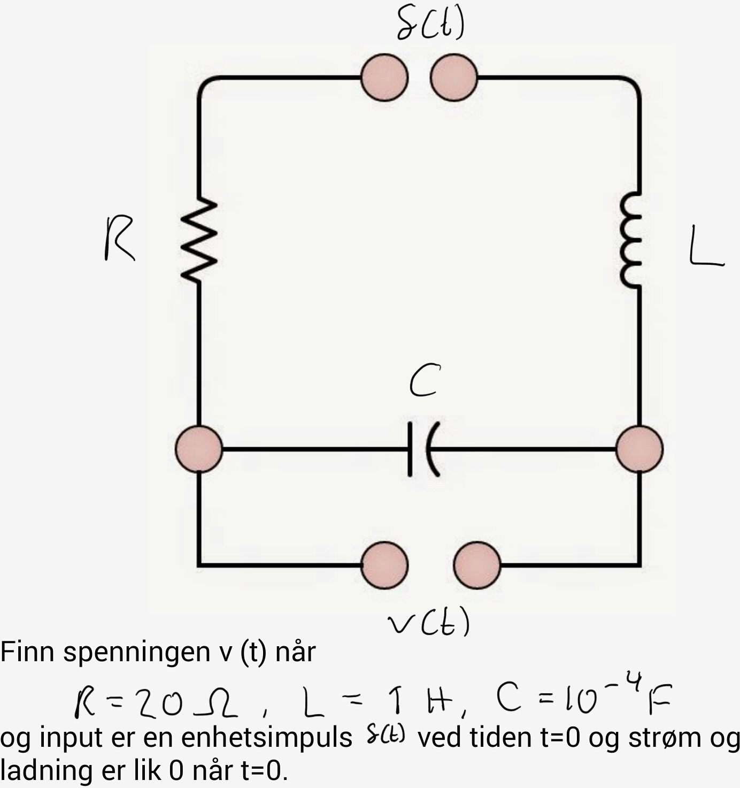

MAT106 for ELK og KOM
Uke 12
19.03.2015
Alexander
Trykk SPACE for å gå fremover, ESC for oversikt over slides
Sist uke
- Introduserte og motiverte Diracs impulsfunksjon og Heavisides enhetssteg
- Benyttet Laplace-transformasjonen til å løse differensialligninger. Drivkraften eller input til disse kunne f.eks. være Diracs impulsfunksjon eller Heavisides enhetssteg.
Kan analysere og løse problemstillinger av følgende type:

Sist uke
- Introduserte og motiverte Diracs impulsfunksjon og Heavisides enhetssteg
- Benyttet Laplace-transformasjonen til å løse differensialligninger. Drivkraften eller input til disse kunne f.eks. være Diracs impulsfunksjon eller Heavisides enhetssteg.
- Differensligninger
Denne uken
- Etablere en løsningsstrategi for differensligninger
- Studere lineære ligningssystemer og matriser (såkalt lineær algebra)
Differensligninger
| $f(n)$ |
Partikulær løsning |
| Polynom-ledd $an^r$ |
$M_r n^r + \cdots + M_1 n + M_0$ |
| Eksponensial $ak^n$ |
$Mk^n$ |
| $k^n\cos n\phi, k^n\sin n\phi$ |
$k^n\big(M\cos n\phi + N\sin n\phi\big)$ |
{kind=link}